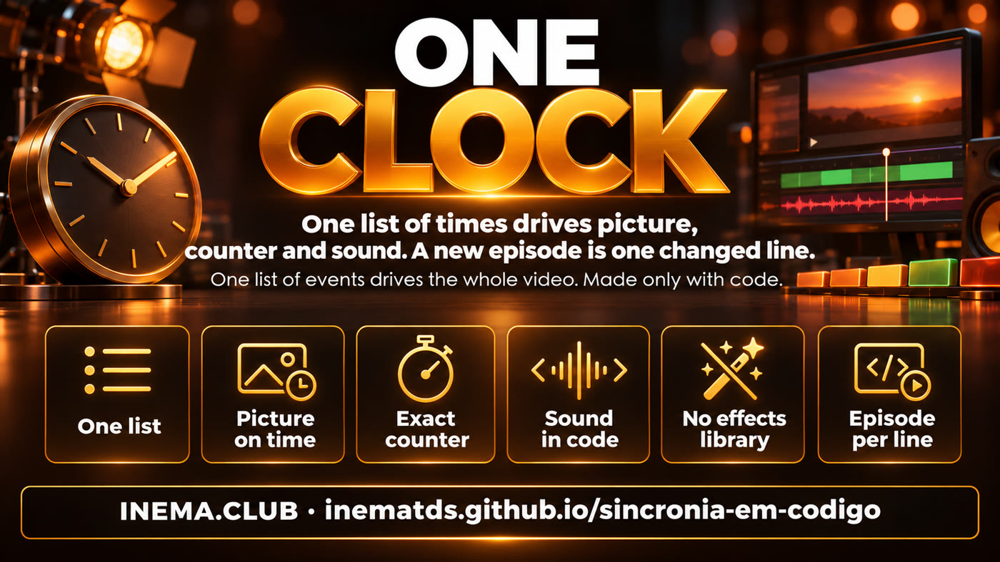
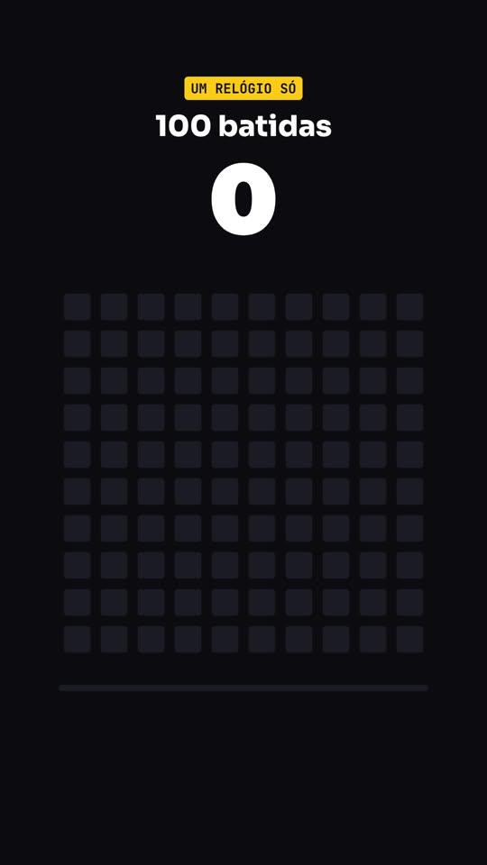
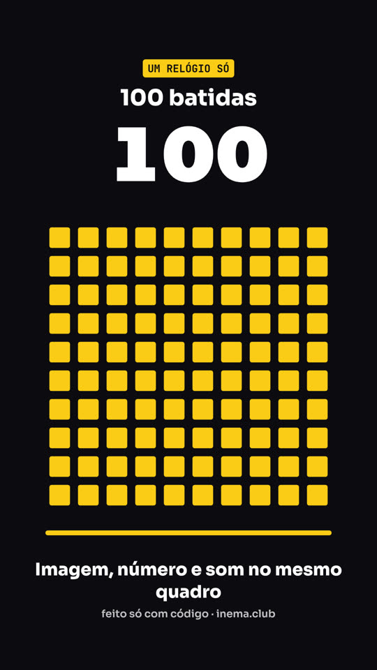

Your video's sound will land on the exact frame of the image, with no manual adjustment. That's what the One clock does.
If you make videos with code (or ask AI to make them), you can lose hours aligning sound, counters, and animation, and each new episode starts from scratch. Here, one list controls everything, and the next episode takes just one line to change.
In video made with code, the most common problem is things falling out of sync: the sound arrives a little early, the number on screen does not match the animation, and each new episode requires changing everything again. This kit brings together three ideas that solve this: one clock (a list of timed events that the image, counter, and sound read), sound made with code (beats, clicks, and thuds generated on the fly, without a sound effects library), and a series changed with one line (each episode is a copy of the template where only one file changes). It includes a ready-to-use demo in HyperFrames. To use it: Node.js and ffmpeg.

Video
Understand it in a few minutes
The video explaining the kit will appear here once it is published.
The 3 ideas
Three ideas that save rework
Each one solves a problem that comes up in every video made with code.
1
One clock
The problem: the animation has one timing, the counter has another, the sound was added later, and nothing lines up. The idea: one list of events ("at 3.2 s, beat 14 happens"). Everything that moves checks this list. Change a time, and all three change together.
2
Sound made with code
The problem: finding a sound effect, downloading it, cutting it, aligning it, and hearing the same sound repeated 100 times gets tiring. The idea: generate each sound on the fly (noise + filter + envelope), with small variations, and place each one at the event time. No downloads and no sound effect license.
3
A series changed with one line
The problem: every new video becomes a new project, and the channel loses its series identity. The idea: one fixed template and a spreadsheet. Each row becomes an episode: copy the template and rewrite only the episode file. The look and pacing stay the same.
Why "no physics running": if the animation depends on simulation or random choices without a seed, each render comes out differently and the sound loses its place. Here, everything is a function of time and a seed, so the same video comes out identically every time, and each episode changes only the seed. How to use it ↓
The demo
100 beats: the one clock at work
Each beat lights up one cell in the grid on the same frame that the wood sound plays. The pitch rises with the count, and the sound moves toward the lit column. The counter and bar read the same list. (HyperFrames is a free tool that turns an HTML page into a video, frame by frame: it does the job of Remotion.)

0 s · grid unlit4 s · 13 beats, 13 cells10 s · the rhythm speeds up

17 s · all 100 cells and the ending
The example episodes in the spreadsheet change the number of beats, the color, and the shape (25 blue circles, 64 green squares, 144 pink circles) without changing the code.
Technical section
The kit: for people who make videos with code
From here down is the technical section: the files, commands, and how to bring the pieces into your project. You do not need this section to understand what came before.
What it is
Two small libraries, a series tool, and a demo
Plain JavaScript. The clock runs in the browser and in Node, so the image and sound use the same file.
Part
What it does
relogio/relogio.js
batidas() creates N events between two times with a rhythm (constant, speeds up, slows down); relogio() responds to contar(t), ultimo(t), proximo(t), fase(t), desde(t), entre(a, b); rng(semente) is the repeatable randomizer.
som/sintese.mjs
Sounds: batida (wood), fatia, estalo, baque, grao, molhado, plop. mixagem(duraçêo).poe(som, t, dB, pan) places each one at the right time; gravarWav and normalizar (−15 LUFS, using ffmpeg).
serie/serie.mjs
Reads episodios.csv, copies the template to episodios/<data>-<slug>/, and writes only episodio.js. Status: pendente (pending) → fazendo (in progress) → pronto (ready) → aprovado (approved) → publicado (published).
exemplo/
The "100 beats" demo in HyperFrames: js/linha.js (the list), js/tela.js (the image), ferramentas/som.mjs (the sound), episodio.js (what changes).
copiar-kit.mjs
Copies the clock and sound to <seu projeto>/kit/ (HyperFrames only sees files inside the project folder).
How it works
One list, three readers
The list is built once. The image asks "what has happened by time t?" on every frame; the sound asks "when does each event happen?" only once.
episodio.js→linha.js (the list)→tela.js (image + counter)+som.mjs (one sound per event)→HyperFrames (MP4)
// js/linha.js of the demo (simplified): the only source of timeimport { batidas, relogio } from'../kit/relogio.js';
export const R = relogio([
...batidas({ n: 100, de: 1.2, ate: 15.6, ritmo: 'acelera', tipo: 'batida' }),
{ t: 16.2, tipo: 'fim' },
]);
// in the picture: R.contar(t, 'batida') → the counter number// in the sound: for (const e of R.eventos) mix.poe(batida(s), e.t, 0)
Prerequisites
What needs to be installed
Nothing else. HyperFrames runs through npx.
Node.js 22+ and git
Runs the clock, sound, series tool, and HyperFrames.
From the repository root. It picks the next pendente from serie/episodios.csv, copies the demo, and writes episodio.js with the row's fields and a new seed.
cd ..
node serie/serie.mjs # lists the episodes# node serie/serie.mjs novo → no name: the next pending onenode serie/serie.mjs novo 25-circulos # or one by name: creates episodios/<data>-25-circulos/cd episodios/*-25-circulos
node ferramentas/som.mjs
npx --yes hyperframes@0.9.37 render . -o renders/ep.mp4 --fps 30
3
Approve and mark as published
Status is stored in the CSV. Only you mark it aprovado.
node serie/serie.mjs status 25-circulos aprovado
node serie/serie.mjs status 25-circulos publicado
4
Bring the clock and sound into your project
Copy the two pieces into <seu projeto>/kit/. Then, in your code, create the list with batidas() and relogio(), draw from R.contar(t) / R.fase(t), and generate sound by reading R.eventos.
node copiar-kit.mjs ../meu-video # the ../meu-video folder must exist; creates kit/relogio.js and kit/sintese.mjs
5
Use the series with your template
In serie/serie.config.json, change molde to your video folder and arquivo/constante to the name of the file that changes per episode. The CSV columns (except slug and status) become the episode fields.